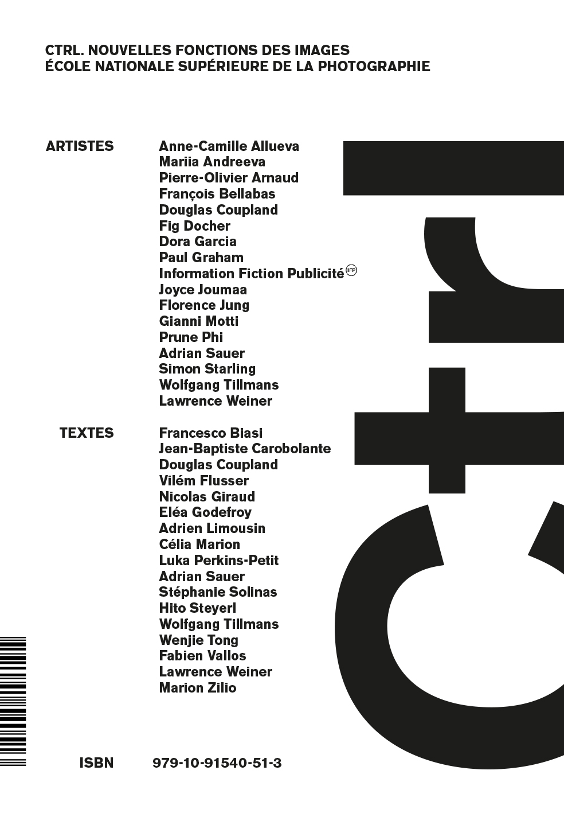

Transparences liquides. Corps, écran, geste
2026 / writing
This contribution extends and shifts phenomenological inquiries around the screen, in order to problematize the invisibility of the activation gesture. The latter now conditions the existence of most images, without being truly brought into consciousness, particularly in its political scope. This text was published in the book Ctrl. – New Functions of Images, on the occasion of the eponymous group exhibition, presented at the ENSP in Arles, curated by Nicolas Giraud and a group of students.
Cette contribution étend et déplace les questionnements phénoménologiques autour de l'écran, afin de problématiser l'invisibilité du geste d'activation. Ce dernier conditionne aujourd'hui l'existence de la plupart des images, sans pour autant être réellement conscientisé, notamment dans sa portée politique. Ce texte a été publié dans le cadre de l'ouvrage Ctrl. – Nouvelles fonctions des images, à l'occasion de l'exposition collective éponyme, présentée à l'ENSP d'Arles, dont le commissariat a été assuré par Nicolas Giraud et un groupe d'étudiant·e·s.
Ecole Nationale Supérieure de la Photographie, Arles
https://www.lespressesdureel.com/ouvrage.php?id=13213&menu=0

-extrait
Aujourd'hui, prêter attention à la perception en train de se faire, devenir conscient·es de l'engagement nécessaire au regard, c'est aussi, et peut-être avant tout, penser notre rôle d'acteur·rices d'un univers iconographique partagé. Car l'image activable ne se contente pas d'être vue : pour advenir, elle suppose une participation plus ou moins consciente, ce qui en fait une situation opératoire. Cela nous oblige alors à interroger la portée politique d'actes parmi les plus banals : qui active ? dans quelles conditions ? avec quelle marge de manœuvre ? vers quelle finalité ? Il s'agit là d'un faisceau d'enjeux qui, en dépit de leur résonance quotidienne, demandent encore à être pensés en profondeur. C'est en cela que l'œuvre contemporaine, lorsqu'elle devient protocole d'activation, propose un déplacement fécond. Depuis le terrain de l'expérience sensible, elle esquisse une pensée politique de la perception. Celle-ci se loge dans les interstices d'une opérativité d'autant plus invisible qu'elle prend des formes ordinaires.